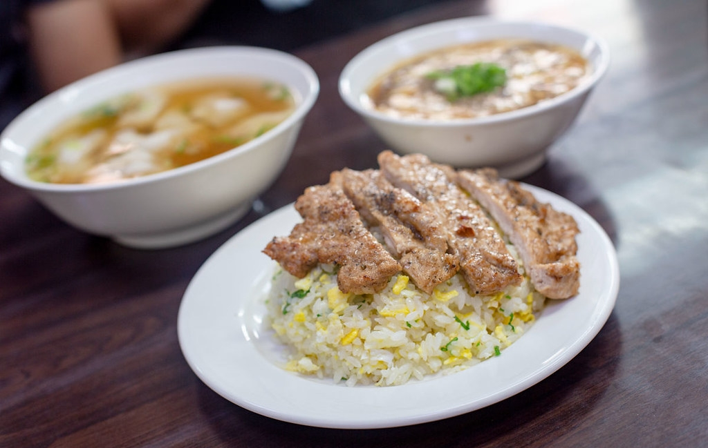
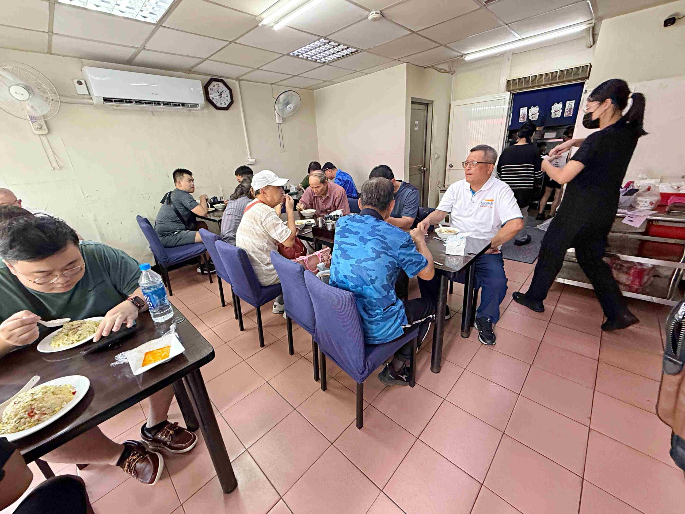
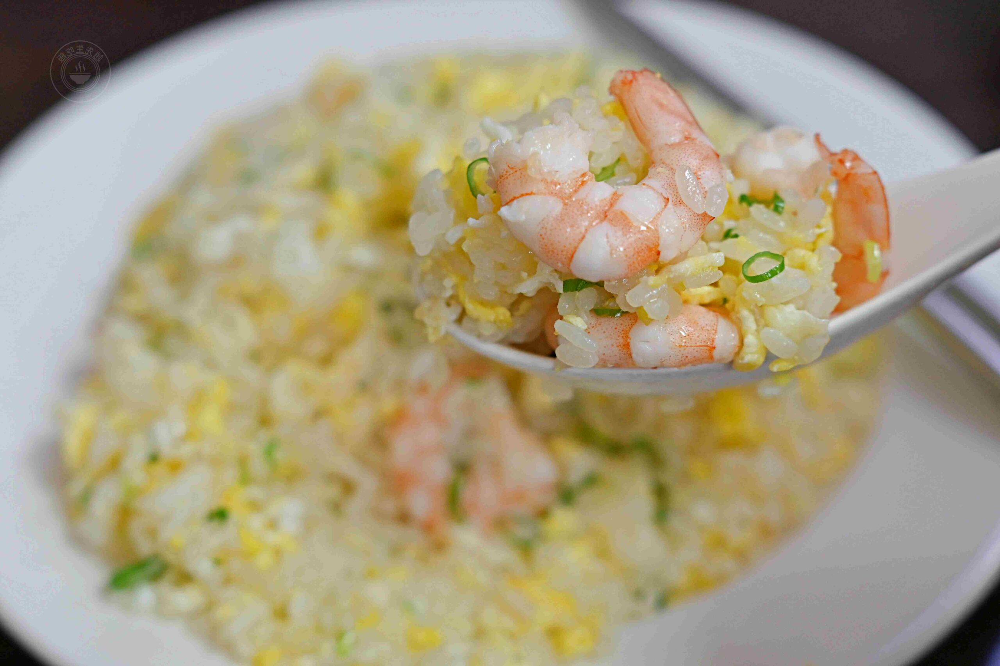
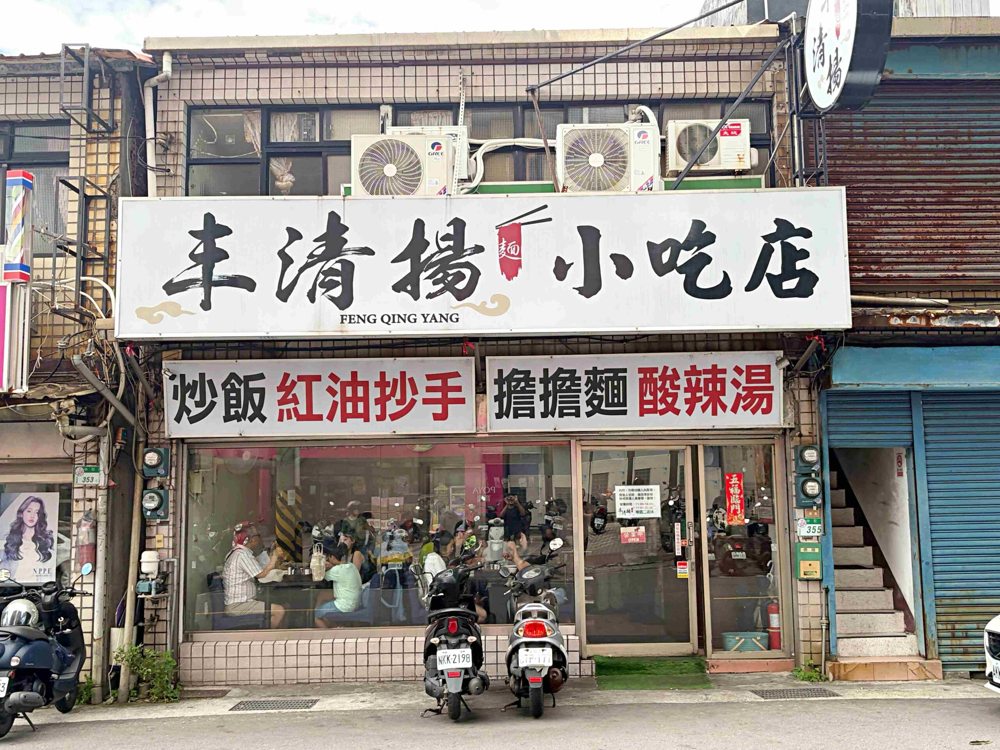

趙先生吃飯｜北投丰清揚麵食館：前鼎泰豐師傅背景的平價炒飯、抄手與麵食口袋名單

一句話摘要
北投中和街「丰清揚麵食館／丰清揚小吃店」被《趙先生吃飯》整理為新北投站附近值得專程吃的平價麵食小店：主打炒飯、紅油抄手、拌麵與湯品，食記中特別提到老闆有鼎泰豐 20 年大廚經歷，價格多落在百元上下。
食記重點
| 項目 | 內容 |
|---|---|
| 店名 | 丰清揚麵食館／丰清揚小吃店 |
| 地址 | 台北市北投區中和街 355 號 |
| 捷運 | 新北投站，食記描述步行約 10 分鐘 |
| 營業時間 | 星期二休息；11:00–14:00、17:00–20:00（依食記，出發前仍需確認） |
| 電話 | 02-2896-692（原文寫 022896692） |
| 周邊 | 北投復興公園、復興平面停車場、對面家樂福可作停車/採買動線參考 |
菜單與價格備忘
食記列出的主要分類包含乾麵、湯麵、抄手、炒飯、湯品、小菜：
- 乾麵：香蔥拌麵 65 元、紅油燃麵 70 元、麻醬麵 80 元、擔擔麵 80 元。
- 湯麵：鮮肉餛飩湯麵 95 元。
- 抄手：鮮肉抄手 95 元。
- 炒飯：香蔥蛋炒飯 80 元、肉絲蛋炒飯 120 元、蝦仁蛋炒飯 155 元。
- 湯品：酸辣湯 65 元、辣味酸辣湯 65 元、鮮肉餛飩湯 95 元。
- 其他：各式小菜 55 元、炸排骨 95 元。

推薦品項整理
### 蝦仁蛋炒飯
食記稱蝦仁蛋炒飯的基底接近香蔥蛋炒飯，重點在火候：米飯粒粒分明、乾爽不黏膩，蛋花與蔥花分布均勻；蝦仁給得有誠意，口感紮實帶脆甜。即使打包放涼後，仍被描述為沒有明顯耗油味。

### 鮮肉抄手
食記描述抄手外皮薄滑、內餡鮮美多汁，搭配紅油醬汁有酸、辣、麻與蔥花香氣。吃完抄手後的紅油醬汁也可拿來拌麵或搭配蛋炒飯。
### 排骨蛋炒飯
排骨被描述為肉質順口軟嫩、斷筋處理佳，但整體風味稍微有一點澀；底下炒飯則是重點，米飯乾爽、蛋香與蔥花清楚，盤底不太積油。
### 酸辣湯
酸辣湯評價相對平淡：料頭處理細、勾芡順口，但不是重酸重辣路線；若把它當成溫和配飯湯品會比較合適。
適合怎麼安排
- 新北投站附近想找正餐，不想只吃觀光區甜點/咖啡時。
- 北投復興公園泡腳、散步後，安排麵食或炒飯收尾。
- 想吃類似鼎泰豐風格的炒飯/抄手，但預算想壓在百元上下。
- 建議避開尖峰或一開門就到，因為食記提到內用位置不多、用餐時間容易候位。

查核與限制
- 本文依據《趙先生吃飯》2026-07-30 食記整理；「前鼎泰豐師傅／20 年大廚經歷」為原食記說法，未另由店家官方頁或商業登記交叉驗證。
- OSM/Nominatim 查詢店名未找到明確 POI，因此地圖連結採 Google Maps 地址搜尋，不當作官方營業資訊。
- 菜單價格、營業時間、電話與排隊狀況可能會變動，出發前建議再查 Google Maps、店家社群或致電確認。
- 食記照片與品項描述反映作者當次用餐經驗，不保證每次火候、份量與服務狀況一致。